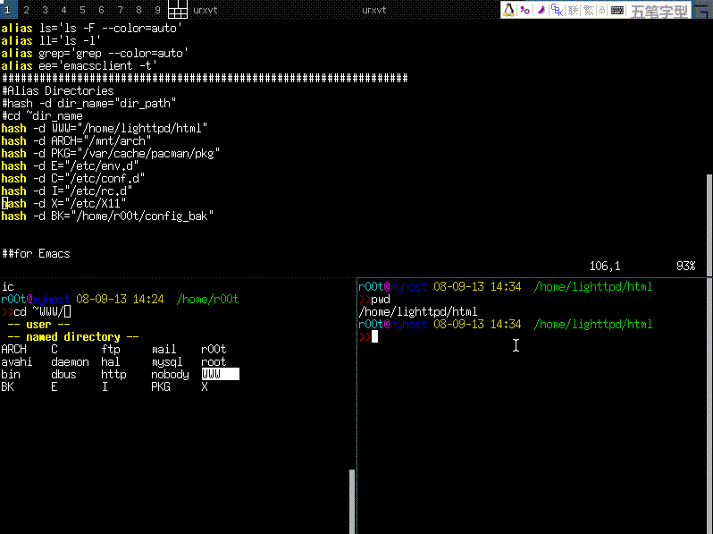

第 30 章 终极 Shell -- ZSH
目录
Zsh 简介
zsh: The last shell you’ll ever need!
Z 是最后一个字母，所以它是终极 Shell。
zsh 拥有很多非常实用的功能
提示符
Zsh 的命令提示符令人印象深刻。它支持右侧对齐的提示符，并且可以配置成这个样子的：

自动补全
Zsh 的自动补全功能十分强大，可以根据上下文补全命令、选项、文件名、进程、用户名、变量、权限符等。不需要记忆繁多的快捷键，只要按 Tab 就可以了。
路径别名
Zsh 拥有贴心的路径别名。假设有一个很长的路径，例如 /home/lighttpd/html，可以把这个路径命名为 ~WWW。

也可以使用 cd 历史纪录，cd -(TAB)

后缀别名
zsh 还可以设定后缀别名
#alias 默认为命令别名
alias ls='ls -F --color=auto'
#使用选项 -s 定义后缀别名，键入扩展名为“xml”的文件名，自动使用 emacs 打开
alias `-s` xml=emacs
键绑定
Zsh 默认使用 Emacs风格 的键绑定，习惯 Bash 键绑定的朋友无需重新适应。Zsh 兼容大多数主流 Shell，像 Bash、Csh 等。
错误校正
Zsh 还拥有错误校正的功能

-- directory -- 是补全类型提示
/etc/x11 [tab] 后被修正为 /etc/X11 ，补全类型提示变成了 -- corrections --
这个功能不是单纯的修正大小写，而是各种拼写错误。 比如说上面的例子，如果输入的是 11 或者 s11，它一样会修正为 X11
有一个前提，就是每次修正，只允许有一处字符错误。 两个以上的错误，除非可以匹配其它的选项，否则就不能修正， 12 就不能修正为 X11 ，除非候选里有 X12、Y12、Z12……
在配置文件里找到这一行，修改容错字数
zstyle ':completion:*:approximate:*' max-errors 1 numeric
Zsh 的强大特性
重定向功能
示例：
| 重定向 stdout 和 stderr 到 file | command |& >file |
| 同时重定向到多个文件 | command >file.1 >file.2 |
补全类型控制
mpg123 [tab] , 候选菜单中只出现扩展名为 .mp3 .MP3 的文件：
zstyle ':completion:*:*:mpg123:*' file-patterns \
'*.(mp3|MP3):mp3\ files *(-/):directories'
zstyle ':completion:*:*:ogg123:*' file-patterns \
'*.(ogg|OGG):ogg\ files *(-/):directories'
计算器
zsh 可以当作计算器使用
#载入数学函数模块 可以进行一些比较高级的运算
#（也可以将此句写在配置文件中）
$ zmodload zsh/mathfunc
#`$((`数学表达式`))` 进行运算，使用 echo 显示结果
$ echo $(( sin(1/4.0)**2 + cos(1/4.0)**2 - 1 ))
-1.1102230246251565e-16
$ echo $(( pi = 4.0 * atan(1.0) ))
3.1415926535897931
$ echo $(( f = sin(0.3) ))
0.29552020666133955
$ print $((1e12 * rand48()))
847909677310.23413
$ print $(( rand48(seed) ))
0.01043488334700271
命令替换
# bash 中使用这种形式
$ emacs find . -name "*.html"
# zsh 同样支持，并可以使用以下形式
$ emacs `$(`ls **/*.html`)`
# zsh 还可以将命令结果生成临时文件，并返回文件名
#支持更复杂的输出和过滤。例如，比较 `new/` 和 `old/` 两个文件夹的内容
$ diff `=(`ls new/`)` `=(`ls old/`)`
#查看生成的临时文件
ls =()
Zsh 配置文件
例 30.1. Zsh 配置文件 .zshrc
#color{{{
autoload colors
colors
for color in RED GREEN YELLOW BLUE MAGENTA CYAN WHITE; do
eval _$color='%{$terminfo[bold]$fg[${(L)color}]%}'
eval $color='%{$fg[${(L)color}]%}'
(( count = $count + 1 ))
done
FINISH="%{$terminfo[sgr0]%}"
#}}}
#命令提示符 {{{
RPROMPT=$(echo "$RED%D %T$FINISH")
PROMPT=$(echo "$BLUE%M$GREEN%/
$CYAN%n $_YELLOW>>>$FINISH ")
#}}}
#标题栏、任务栏样式{{{
case $TERM in (*xterm*|*rxvt*|(dt|k|E)term)
precmd () { print -Pn "\e]0;%n@%M//%/\a" }
preexec () { print -Pn "\e]0;%n@%M//%/\ $1\a" }
;;
esac
#}}}
#关于历史纪录的配置 {{{
#历史纪录条目数量
export HISTSIZE=10000
#注销后保存的历史纪录条目数量
export SAVEHIST=10000
#历史纪录文件
#export HISTFILE=~/.zhistory
#以附加的方式写入历史纪录
setopt INC_APPEND_HISTORY
#如果连续输入的命令相同，历史纪录中只保留一个
setopt HIST_IGNORE_DUPS
#为历史纪录中的命令添加时间戳
setopt EXTENDED_HISTORY
#启用 cd 命令的历史纪录，cd -[TAB]进入历史路径
setopt AUTO_PUSHD
#相同的历史路径只保留一个
setopt PUSHD_IGNORE_DUPS
#在命令前添加空格，不将此命令添加到纪录文件中
#setopt HIST_IGNORE_SPACE
#}}}
#每个目录使用独立的历史纪录{{{
cd() {
builtin cd "$@" # do actual cd
fc -W # write current history file
local HISTDIR="$HOME/.zsh_history$PWD" # use nested folders for history
if [ ! -d "$HISTDIR" ] ; then # create folder if needed
mkdir -p "$HISTDIR"
fi
export HISTFILE="$HISTDIR/zhistory" # set new history file
touch $HISTFILE
local ohistsize=$HISTSIZE
HISTSIZE=0 # Discard previous dir's history
HISTSIZE=$ohistsize # Prepare for new dir's history
fc -R #read from current histfile
}
mkdir -p $HOME/.zsh_history$PWD
export HISTFILE="$HOME/.zsh_history$PWD/zhistory"
function allhistory { cat $(find $HOME/.zsh_history -name zhistory) }
function convhistory {
sort $1 | uniq |
sed 's/^:\([ 0-9]*\):[0-9]*;\(.*\)/\1::::::\2/' |
awk -F"::::::" '{ $1=strftime("%Y-%m-%d %T",$1) "|"; print }'
}
#使用 histall 命令查看全部历史纪录
function histall { convhistory =(allhistory) |
sed '/^.\{20\} *cd/i\\' }
#使用 hist 查看当前目录历史纪录
function hist { convhistory $HISTFILE }
#全部历史纪录 top44
function top44 { allhistory | awk -F':[ 0-9]*:[0-9]*;' '{ $1="" ; print }' | sed 's/ /\n/g' | sed '/^$/d' | sort | uniq -c | sort -nr | head -n 44 }
#}}}
#杂项 {{{
#允许在交互模式中使用注释 例如：
#cmd #这是注释
setopt INTERACTIVE_COMMENTS
#启用自动 cd，输入目录名回车进入目录
#稍微有点混乱，不如 cd 补全实用
#setopt AUTO_CD
#扩展路径
#/v/c/p/p => /var/cache/pacman/pkg
setopt complete_in_word
#禁用 core dumps
limit coredumpsize 0
#Emacs风格 键绑定
bindkey -e
#设置 [DEL]键 为向后删除
bindkey "\e[3~" delete-char
#以下字符视为单词的一部分
WORDCHARS='*?_-[]~=&;!#$%^(){}<>'
#}}}
#自动补全功能 {{{
setopt AUTO_LIST
setopt AUTO_MENU
#开启此选项，补全时会直接选中菜单项
#setopt MENU_COMPLETE
autoload -U compinit
compinit
#自动补全缓存
#zstyle ':completion::complete:*' use-cache on
#zstyle ':completion::complete:*' cache-path .zcache
#zstyle ':completion:*:cd:*' ignore-parents parent pwd
#自动补全选项
zstyle ':completion:*' verbose yes
zstyle ':completion:*' menu select
zstyle ':completion:*:*:default' force-list always
zstyle ':completion:*' select-prompt '%SSelect: lines: %L matches: %M [%p]'
zstyle ':completion:*:match:*' original only
zstyle ':completion::prefix-1:*' completer _complete
zstyle ':completion:predict:*' completer _complete
zstyle ':completion:incremental:*' completer _complete _correct
zstyle ':completion:*' completer _complete _prefix _correct _prefix _match _approximate
#路径补全
zstyle ':completion:*' expand 'yes'
zstyle ':completion:*' squeeze-shlashes 'yes'
zstyle ':completion::complete:*' '\\'
#彩色补全菜单
eval $(dircolors -b)
export ZLSCOLORS="${LS_COLORS}"
zmodload zsh/complist
zstyle ':completion:*' list-colors ${(s.:.)LS_COLORS}
zstyle ':completion:*:*:kill:*:processes' list-colors '=(#b) #([0-9]#)*=0=01;31'
#修正大小写
zstyle ':completion:*' matcher-list '' 'm:{a-zA-Z}={A-Za-z}'
#错误校正
zstyle ':completion:*' completer _complete _match _approximate
zstyle ':completion:*:match:*' original only
zstyle ':completion:*:approximate:*' max-errors 1 numeric
#kill 命令补全
compdef pkill=kill
compdef pkill=killall
zstyle ':completion:*:*:kill:*' menu yes select
zstyle ':completion:*:*:*:*:processes' force-list always
zstyle ':completion:*:processes' command 'ps -au$USER'
#补全类型提示分组
zstyle ':completion:*:matches' group 'yes'
zstyle ':completion:*' group-name ''
zstyle ':completion:*:options' description 'yes'
zstyle ':completion:*:options' auto-description '%d'
zstyle ':completion:*:descriptions' format $'\e[01;33m -- %d --\e[0m'
zstyle ':completion:*:messages' format $'\e[01;35m -- %d --\e[0m'
zstyle ':completion:*:warnings' format $'\e[01;31m -- No Matches Found --\e[0m'
zstyle ':completion:*:corrections' format $'\e[01;32m -- %d (errors: %e) --\e[0m'
# cd ~ 补全顺序
zstyle ':completion:*:-tilde-:*' group-order 'named-directories' 'path-directories' 'users' 'expand'
#}}}
##行编辑高亮模式 {{{
# Ctrl+@ 设置标记，标记和光标点之间为 region
zle_highlight=(region:bg=magenta #选中区域
special:bold #特殊字符
isearch:underline)#搜索时使用的关键字
#}}}
##空行(光标在行首)补全 "cd " {{{
user-complete(){
case $BUFFER in
"" ) # 空行填入 "cd "
BUFFER="cd "
zle end-of-line
zle expand-or-complete
;;
"cd --" ) # "cd --" 替换为 "cd +"
BUFFER="cd +"
zle end-of-line
zle expand-or-complete
;;
"cd +-" ) # "cd +-" 替换为 "cd -"
BUFFER="cd -"
zle end-of-line
zle expand-or-complete
;;
* )
zle expand-or-complete
;;
esac
}
zle -N user-complete
bindkey "\t" user-complete
#}}}
##在命令前插入 sudo {{{
#定义功能
sudo-command-line() {
[[ -z $BUFFER ]] && zle up-history
[[ $BUFFER != sudo\ * ]] && BUFFER="sudo $BUFFER"
zle end-of-line #光标移动到行末
}
zle -N sudo-command-line
#定义快捷键为： [Esc] [Esc]
bindkey "\e\e" sudo-command-line
#}}}
#命令别名 {{{
alias -g cp='cp -i'
alias -g mv='mv -i'
alias -g rm='rm -i'
alias -g ls='ls -F --color=auto'
alias -g ll='ls -l'
alias -g grep='grep --color=auto'
alias -g ee='emacsclient -t'
#[Esc][h] man 当前命令时，显示简短说明
alias run-help >&/dev/null && unalias run-help
autoload run-help
#历史命令 top10
alias top10='print -l ${(o)history%% *} | uniq -c | sort -nr | head -n 10'
#}}}
#路径别名 {{{
#进入相应的路径时只要 cd ~xxx
hash -d WWW="/home/lighttpd/html"
hash -d ARCH="/mnt/arch"
hash -d PKG="/var/cache/pacman/pkg"
hash -d E="/etc/env.d"
hash -d C="/etc/conf.d"
hash -d I="/etc/rc.d"
hash -d X="/etc/X11"
hash -d BK="/home/r00t/config_bak"
#}}}
##for Emacs {{{
#在 Emacs终端 中使用 Zsh 的一些设置 不推荐在 Emacs 中使用它
if [[ "$TERM" == "dumb" ]]; then
setopt No_zle
PROMPT='%n@%M %/
>>'
alias ls='ls -F'
fi
#}}}
#{{{自定义补全
#补全 ping
zstyle ':completion:*:ping:*' hosts 192.168.128.1{38,} www.g.cn \
192.168.{1,0}.1{{7..9},}
#补全 ssh scp sftp 等
my_accounts=(
{r00t,root}@{192.168.1.1,192.168.0.1}
kardinal@linuxtoy.org
123@211.148.131.7
)
zstyle ':completion:*:my-accounts' users-hosts $my_accounts
#}}}
#{{{ F1 计算器
arith-eval-echo() {
LBUFFER="${LBUFFER}echo \$(( "
RBUFFER=" ))$RBUFFER"
}
zle -N arith-eval-echo
bindkey "^[[11~" arith-eval-echo
#}}}
####{{{
function timeconv { date -d @$1 +"%Y-%m-%d %T" }
# }}}
## END OF FILE #################################################################
# vim:filetype=zsh foldmethod=marker autoindent expandtab shiftwidth=4
这是一种效果超炫的提示符，把上面与提示符相关的配置语句注释掉，加入下面代码
#线框型提示符
function precmd {
local TERMWIDTH
(( TERMWIDTH = ${COLUMNS} - 1 ))
###
# 如果路径太长，截短它
FILLBAR=""
PWDLEN=""
#统计 %~ 双字节字符
local count_db_wth_char="$( echo ${^${(%):-%~}} | sed 's/\(.\)/\1\n/g' | grep -c \[\^\!-\~\] )"
local promptsize=${#${(%):---(%n@%m:%l)---()--}}
local pwdsize=${#${(%):-%~}}+$count_db_wth_char
if [[ "$promptsize + $pwdsize" -gt $TERMWIDTH ]]; then
((PWDLEN=$TERMWIDTH - $promptsize))
else
FILLBAR="\${(l.(($TERMWIDTH - ($promptsize + $pwdsize)))..${HBAR}.)}"
fi
###
# Get APM info.
#if which ibam > /dev/null; then
#APM_RESULT=`ibam --percentbattery`
#elif which apm > /dev/null; then
#APM_RESULT=`apm`
#fi
}
setopt extended_glob
preexec () {
if [[ "$TERM" == "screen" ]]; then
local CMD=${1[(wr)^(*=*|sudo|-*)]}
echo -n "\ek$CMD\e\\"
fi
}
setprompt () {
###
# Need this so the prompt will work.
setopt prompt_subst
###
# See if we can use colors.
autoload colors zsh/terminfo
if [[ "$terminfo[colors]" -ge 8 ]]; then
colors
fi
for color in RED GREEN YELLOW BLUE MAGENTA CYAN WHITE; do
eval $color='%{$terminfo[bold]$fg[${(L)color}]%}'
eval LIGHT_$color='%{$fg[${(L)color}]%}'
(( count = $count + 1 ))
done
NO_COLOUR="%{$terminfo[sgr0]%}"
###
# See if we can use extended characters to look nicer.
typeset -A altchar
set -A altchar ${(s..)terminfo[acsc]}
SET_CHARSET="%{$terminfo[enacs]%}"
SHIFT_IN="%{$terminfo[smacs]%}"
SHIFT_OUT="%{$terminfo[rmacs]%}"
HBAR=${altchar[q]:--}
#HBAR=" "
ULCORNER=${altchar[l]:--}
LLCORNER=${altchar[m]:--}
LRCORNER=${altchar[j]:--}
URCORNER=${altchar[k]:--}
###
# Decide if we need to set titlebar text.
case $TERM in
xterm*)
TITLEBAR=$'%{\e]0;%(!.-=*[ROOT]*=- | .)%n@%m:%~ | ${COLUMNS}x${LINES} | %y\a%}'
;;
screen)
TITLEBAR=$'%{\e_screen \005 (\005t) | %(!.-=[ROOT]=- | .)%n@%m:%~ | ${COLUMNS}x${LINES} | %y\e\\%}'
;;
*)
TITLEBAR=''
;;
esac
###
# Decide whether to set a screen title
if [[ "$TERM" == "screen" ]]; then
STITLE=$'%{\ekzsh\e\\%}'
else
STITLE=''
fi
###
# APM detection
#if which ibam > /dev/null; then
#APM='$RED${${APM_RESULT[(f)1]}[(w)-2]}%%(${${APM_RESULT[(f)3]}[(w)-1]})$LIGHT_BLUE:'
#elif which apm > /dev/null; then
#APM='$RED${APM_RESULT[(w)5,(w)6]/\% /%%}$LIGHT_BLUE:'
#else
APM=''
#fi
###
# Finally, the prompt.
PROMPT='$SET_CHARSET$STITLE${(e)TITLEBAR}\
$CYAN$SHIFT_IN$ULCORNER$BLUE$HBAR$SHIFT_OUT(\
$GREEN%(!.%SROOT%s.%n)$GREEN@%m:%l\
$BLUE)$SHIFT_IN$HBAR$CYAN$HBAR${(e)FILLBAR}$BLUE$HBAR$SHIFT_OUT(\
$MAGENTA%$PWDLEN<...<%~%<<\
$BLUE)$SHIFT_IN$HBAR$CYAN$URCORNER$SHIFT_OUT\
$CYAN$SHIFT_IN$LLCORNER$BLUE$HBAR$SHIFT_OUT(\
%(?..$LIGHT_RED%?$BLUE:)\
${(e)APM}$YELLOW%D{%H:%M}\
$LIGHT_BLUE:%(!.$RED.$WHITE)%#$BLUE)$SHIFT_IN$HBAR$SHIFT_OUT\
$CYAN$SHIFT_IN$HBAR$SHIFT_OUT\
$NO_COLOUR '
RPROMPT=' $CYAN$SHIFT_IN$HBAR$BLUE$HBAR$SHIFT_OUT\
($YELLOW%D{%a,%b%d}$BLUE)$SHIFT_IN$HBAR$CYAN$LRCORNER$SHIFT_OUT$NO_COLOUR'
PS2='$CYAN$SHIFT_IN$HBAR$SHIFT_OUT\
$BLUE$SHIFT_IN$HBAR$SHIFT_OUT(\
$LIGHT_GREEN%_$BLUE)$SHIFT_IN$HBAR$SHIFT_OUT\
$CYAN$SHIFT_IN$HBAR$SHIFT_OUT$NO_COLOUR '
}
setprompt